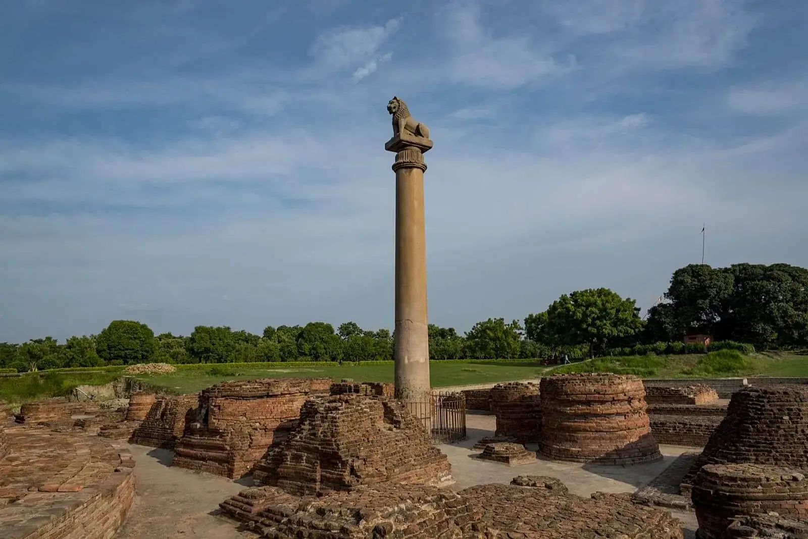
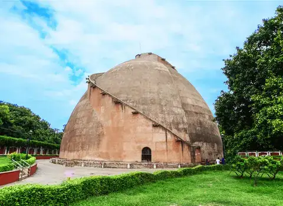
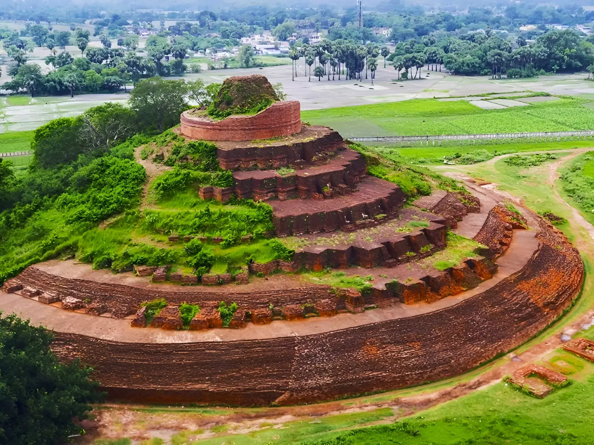
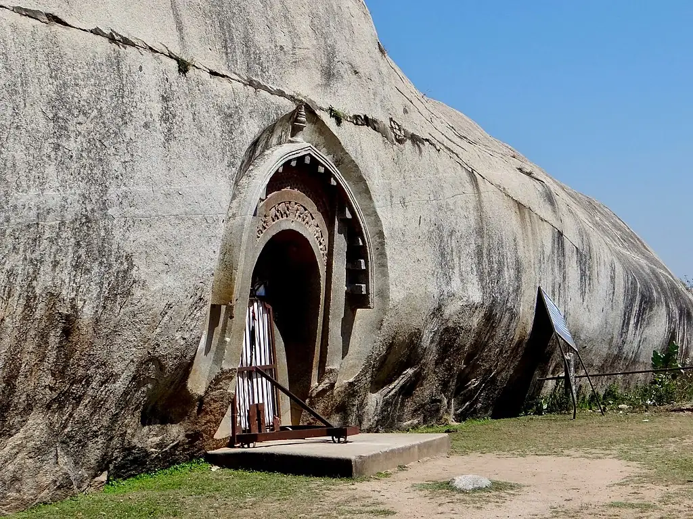

North Bihar
Bike Builders proudly serves riders in North Bihar, offering affordable, verified pre-owned bikes (search "second hand bike in Muzaffarpur" or "second hand bike in Darbhanga") with doorstep assistance and local inspections.
Bike Builders lists certified second hand bikes in Bihar — verified, affordable and ready for a test ride in your city.

Bike Builders proudly serves riders in North Bihar, offering affordable, verified pre-owned bikes (search "second hand bike in Muzaffarpur" or "second hand bike in Darbhanga") with doorstep assistance and local inspections.

From Patna to Gaya and surrounding towns, our South Bihar inventory focuses on commuter and touring bikes — if you’re searching for "second hand bike in Patna" or "used bike in Gaya", we’ve got verified options with transparent history reports.

Bike Builders maintains strong local presence in East Bihar, connecting buyers with quality used bikes (e.g. "second hand bike in Bhagalpur", "used bikes in Purnia") in Katihar and nearby towns.
West Bihar riders can find robust options — from daily commuters to rugged tourers — with local servicing support and verified paperwork. Search "second hand bike in Siwan" or "used bikes in Buxar" to see local inventory.

Central Bihar locations are covered end-to-end — we bring inspected pre-owned bikes to your neighbourhood with easy financing and test rides. Popular searches include "second hand bike in Nalanda" and "used bikes near Patna".